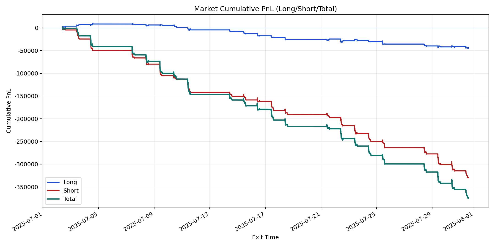
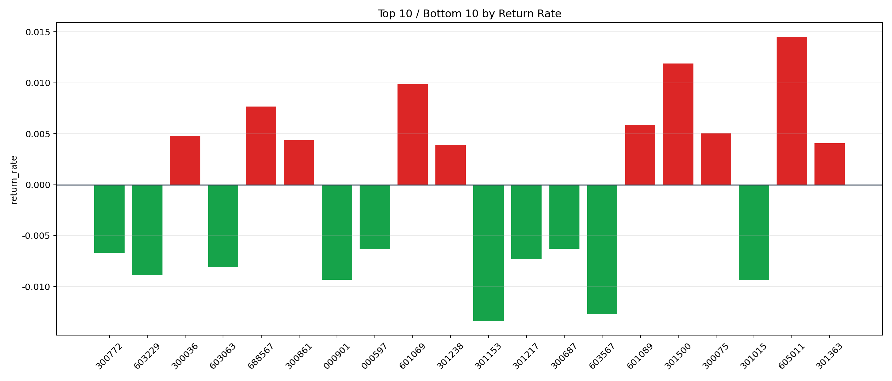

| repo_root | /home/haoranyou/data/output/dynamic_AUM_TAKER_index1000 |
|---|---|
| period_months | 1 |
| period_label | 2025-07-02_to_2025-07-31 |
| start_time | 2025-07-02 09:46:12 |
| end_time | 2025-07-31 14:45:27 |
| n_trades | 16476 |
| n_symbols | 325 |
| total_pnl | -374488.1766500021 |
| long_total_pnl | -44520.97759999862 |
| short_total_pnl | -329967.1990500035 |
| total_entry_notional | 294226035.0 |
| long_entry_notional | 79835492.0 |
| short_entry_notional | 214390543.0 |
| total_return_rate | -0.0012727907530344896 |
| long_return_rate | -0.0005576589620065049 |
| short_return_rate | -0.0015390940030876432 |
| top_symbols_by_return | ["605011", "301500", "601069", "688567", "601089", "300075", "300036", "300861", "301363", "301238"] |
| bottom_symbols_by_return | ["301153", "603567", "301015", "000901", "603229", "603063", "301217", "300772", "000597", "300687"] |

